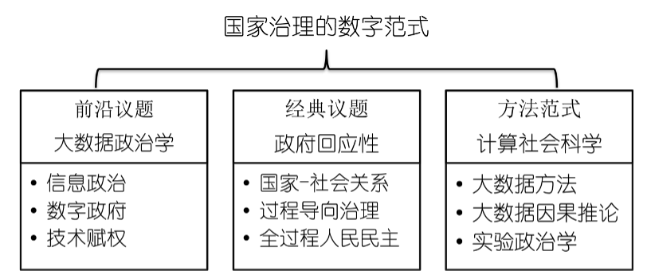

孟天广
清华大学社会科学学院副院长
清华大学政治学系长聘副教授
教育部青年长江学者

研究与发表
我长期关注数字时代国家治理转型的制度和技术面向，聚焦“国家治理的数字范式”推进国家治理数字化转型的理论与方法范式创新。一方面构建信息政治学理论框架提出国家治理的信息理论，从信息视角探索政府回应性、国家-社会关系等经典政治学问题，另一方面将数字范式引入政治学科开展大数据政治学研究，为政府数字化转型以及数字化国家能力等前沿政治学问题提供理论分析。
代表性学术成果
- Wu, Jason & Meng, Tianguang*. The Nature of Ideology in Urban China. Comparative Politics. 2022. Forthcoming.
- Huang, Zhongbin., Yang, Zesen., & Tianguang Meng*. National Identity of Locality: The State, Patriotism, and Nationalism in Cyber China. Journal of Chinese Political Science. 2022. https://doi.org/10.1007/s11366-022-09820-4.
- Wang Xinxi. &, Meng Tianguang*. Internet involvement, information consumption, and political participation in urban China. Chinese Journal of Sociology 2022. Forthcoming.
- Tianguang Meng., & Zheng Su. When top-down meets bottom-up: Local officials and selective responsiveness within fiscal policymaking in China. World Development. 2021,142,105443.
- Zheng, Siyao & Meng, Tianguang*. The Paradox of Responsiveness and Social Protest in China. Journal of Contemporary China.2021, 30:128, 212-232.
- Dai Y, Li Y, Cheng C Y, Zhao H, Meng T. Government-Led or Public-Led? Chinese Policy Agenda Setting during the COVID-19 Pandemic. Journal of Comparative Policy Analysis: Research and Practice 2021, 23(3).
- Zhu, X, Meng, T. Geographical Leadership Mobility and Policy Isomorphism: Narrowing the Regional Inequality of Social Spending in China. Policy Studies Journal. 2020; 48: 806– 832.
- Meng. Tianguang., & Yang. Zesen. Variety of Responsive Institutions and Quality of Responsiveness in Cyber China. China Review.2020, 20(3): 13-42.
- Li, Hui & Meng, Tianguang*. Corruption Experience and Public Perceptions of Anti-corruption Crackdowns: Experimental Evidence from China. Journal of Chinese Political Science. 2020, 25(1): 431-456.
- Jiang, Junyan., Meng, Tianguang., & Zhang, Qing. From Internet to social safety net: The policy consequences of online participation in China. Governance, 2019 32(3):531-546.
- Li, Feng., Liu, Yang., & Meng, Tianguang*. Discursive Strategy of Opinion Expression and Government Response in China: Text Analysis Based on Online Petitions. Telematics and Informatics, 2019, 42, 101238.
- Zhang, Kaiping., & Meng, Tianguang. Political Elites in Deliberative Democracy: Beliefs and Behaviors of Chinese Officials. Japanese Journal of Political Science. 2018, 19:643-662.
- Meng, Tianguang., Pan, Jennifer., & Yang, Ping. Conditional Receptivity to Citizen Participation: Evidence From a Survey Experiment in China. Comparative Political Studies, 2017, 50(4): 399-433.
- Su, Zheng., & Meng, Tianguang*. Selective responsiveness: Online public demands and government responsiveness in China. Social Science Research. 2016(59):52-67.
- Im, Dong-Kyun., & Meng, Tianguang*. The policy–opinion nexus: The impact of social protection programs on welfare policy preferences in China. International Journal of Public Opinion Research. 2016(28):241-268.
- Zhi, Qiang., & Meng, Tianguang. Funding allocation, inequality, and scientific research output: an empirical study based on the life science sector of Natural Science Foundation of China. Scientometrics. 2016. 106(2): 603-628.
- Thomas Bernauer*, Robert Gampfer, Tianguang Meng, Yu-Sung Su. Could more civil society involvement increase public support for climate policy-making? Evidence from a survey experiment in China. Global Environmental Change 2016 (40): 1-12.
- Meng. Tianguang., & Chen. He*. Multilevel analysis of social capital and self-rated health: Evidence from China. Health & Place. 2014 (27): 38-44.
- 孟天广.福利改革的政治分析：制度设计、制度绩效与政治信任[J].华中师范大学学报(人文社会科学版),2022,61(3):66-79. 影响因子2.609。
- 孟天广.福利制度的过程治理：再分配、政府质量与政治信任[J].行政论坛,2022,28(1):31-39.
- 赵金旭,赵娟,孟天广*.数字政府发展的理论框架与评估体系研究——基于31个省级行政单位和101个大中城市的实证分析[J].中国行政管理,2022(6):49-58.
- 孟天广, 李珍珍*. 治理算法：算法风险的伦理原则及其治理逻辑[J].学术论坛,2022,45(1):9-20.
- 严宇,孟天广*. 数据要素的类型学、产权归属及其治理逻辑[J].西安交通大学学报(社会科学版),2022,42(2):103-111.
- 赵金旭,孟天广*.官员晋升激励会影响政府回应性么?——基于北京市“接诉即办”改革的大数据分析[J].公共行政评论,2021,14(2):111-134.
- 孟天广,赵金旭,郑兆祐.重塑科层“条块”关系会提升政府回应性么?——一项基于北京市“吹哨报到”改革的政策实验[J].中国行政管理,2021(4):31-39.
- 孟天广,黄种滨,张小劲.政务热线驱动的超大城市社会治理创新—以北京市“接诉即办”改革为例[J].公共管理学报,2021,18(2):1-12.
- 赵娟,孟天广*.数字政府的纵向治理逻辑:分层体系与协同治理[J].学海,2021(2):90-99.
- 王薪喜,孟天广*.中国城市居民的互联网使用与政治参与 基于介入方式与信息消费的类型学分析[J].社会,2021,41(1):178-206.
- 孟天广.政府数字化转型的要素、机制与路径———兼论“技术赋能”与“技术赋权”的双向驱动[J].治理研究,2021,37(1):5-14.
- 郑思尧,孟天广*.环境治理的信息政治学：中央环保督察如何驱动公众参与?[J].经济社会体制比较,2021(1):80-92.
- 孟天广,王烨.国家治理现代化的“新叙事”:转型中国的党建与国家建设[J].华中师范大学学报(人文社会科学版),2020,59(6):1-12.
- 孟天广.重访回应性政府:网络问政制度的多样性与制度绩效[J].中国社会科学（英文版）,2019,40(4):148-172.
- 孟天广.政治科学视角下的大数据方法与因果推论[J].政治学研究,2018(3):29-38.
- 孟天广,宁晶.互联网“去政治化”的政治后果——基于广义倾向值匹配的实证研究[J].探索,2018(3):63-76.
- 孟天广,赵娟.网络驱动的回应性政府:网络问政的制度扩散及运行模式[J].上海行政学院学报,2018,19(3):36-44.
- 李辉,孟天广*.腐败经历与腐败感知:基于调查实验与直接提问的双重检验[J].社会,2017,37(6):194-215.
- 孟天广,郑思尧.信息、传播与影响:网络治理中的政府新媒体——结合大数据与小数据分析的探索[J].公共行政评论,2017,10(1):29-52.
- 孟天广,季程远.重访数字民主:互联网介入与网络政治参与——基于列举实验的发现[J].清华大学学报(哲学社会科学版),2016,31(4):43-54.
- 孟天广,田栋.群众路线与国家治理现代化——理论分析与经验发现[J].政治学研究,2016(3):25-35.
- 孟天广,杨平,苏政.转型中国的公民意见与地方财政决策——基于对地方政府的调查实验[J].公共管理学报,2015,12(3):57-68.
- 孟天广,李锋.网络空间的政治互动:公民诉求与政府回应性——基于全国性网络问政平台的大数据分析[J].清华大学学报(哲学社会科学版),2015,30(3):17-29.
- 孟天广,苏政.“同侪效应”与“邻居效应”:地级市非税收入规模膨胀的政治逻辑[J].经济社会体制比较,2015(2):165-176.
- 孟天广,郭凤林.大数据政治学:新信息时代的政治现象及其探析路径[J].国外理论动态,2015(1):46-56.
- 孟天广,陈昊.不平等、贫困与农村基层民主——基于全国400个村庄的实证研究[J].公共管理学报,2014,11(2):129-138.
- 孟天广.转型期的中国政治信任:实证测量与全貌概览[J].华中师范大学学报(人文社会科学版),2014,53(2):1-10.
- 孟天广.转型期中国公众的分配公平感:结果公平与机会公平[J].社会,2012,32(6):108-134.
- 孟天广,杨明. 转型期中国县级政府的客观治理绩效与政治信任——从“经济增长合法性”到“公共产品合法性” [J].经济社会体制比较,2012(4):122-135.
- 孟天广、郭凤林译，马丁·吉伦斯著：《财富与影响力：美国的经济不平等与政治权力》，上海人民出版社，2021年；
- 孟天广、张小劲：《中国数字政府发展研究报告》，经济科学出版社，2021年；
- 孟天广：《过程导向的国家治理：政府质量的生成、效应与机制》，商务印书馆，2022年；
进展中研究项目（工作论文）
- A Tale of Two Pandemics: Polarization in Elite Discourses of COVID-19 on Chinese Social Media.
- Official Media as Emotional Valves: How Does Official Media Guide Nationalism in Cyber China During the COVID-19 Epidemic?
- Publicizing Top-Down Accountability and Political Support: Evidence from an Online Survey Experiment.
- Does Political Identity Matter When Discussing Internet-usage Skills and Online Civic Activism in China?
- Conceptions of Democracy in China: New Evidence from the Structural Topic Model.
- Governing China in Digital: Digital Governance in Chinese Municipalities.
- Bridging Digital Divide: Public Information Openness and Equalized Participation in China.
- New Socialist Men (and Women)? Communist-era Legacies and Political Engagement in China.
- Politicians as Overseers: Leadership Monitoring and Digital Facilitated Accountability in China.
- The Political Economy of Party Recruitment in Single-Party Regime: Evidence from China.
- What Makes A Government Respond? -- a Data-driven Approach.
- 信息政治学：国家治理的信息基础.
- 市场化转型、单位制与国家能力感知度.
- 政治统领与国家治理：基于深改委的研究.
- 外来的“和尚”好念经？官员来源分殊与地方政治机会结构.
- 纵向权力关系与政府回应性.
- 软宣传的兴起、特征与效果：基于2009-2019年主流媒体与政务新媒体的大数据分析.